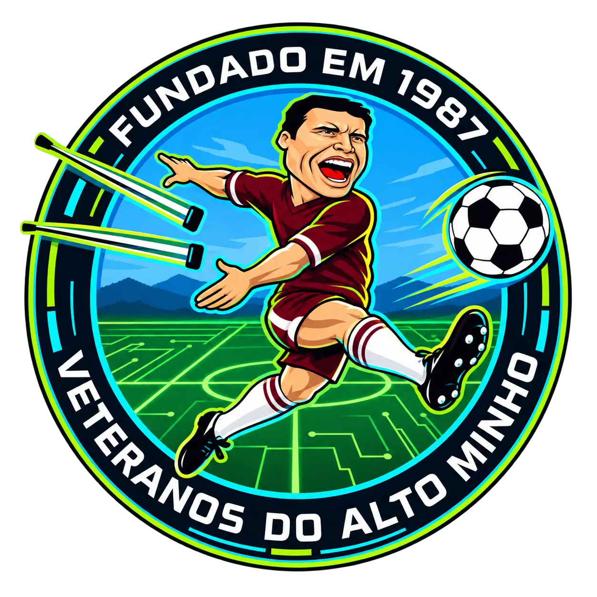

Veteranos Alto Minho
Menu
Início
Calendário
Taça
Supertaça
Resultados
Classificação
Equipas
Regulamento
Contactos
Época 2026/2027
Resumo da equipa
← Todas as equipas
Equipa
A carregar…
Todos os jogos
Por ordem de data · Campeonato, Taça e Supertaça
A carregar jogos…